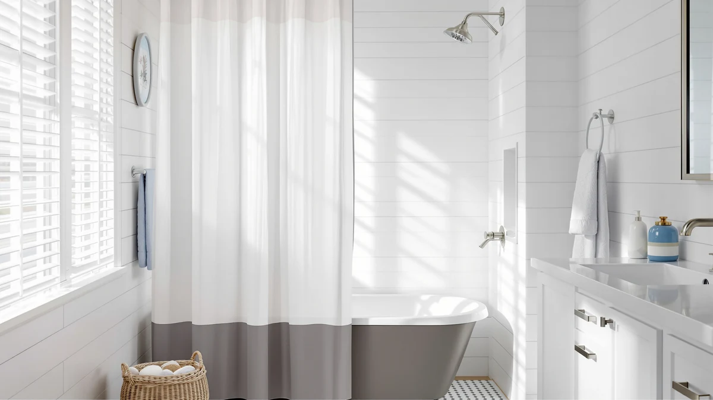

The Best Extra-long Shower Curtain Liners (2026)
Prices and picks verified as of September 2026. Independent, reader-supported reviews.


Quick Answer
After comparing size, material, and verified owner ratings, the Extra Long Shower Curtain 84 is our top pick among the best extra-long shower curtain liners because it covers the full 84-inch drop without pooling and backs that up with 25,378 reviews at 4.7 stars. If you want a liner that can hang alone without a fabric curtain over it, the heavier Gibelle liner is worth the extra cost.
Our pick: Extra Long Shower Curtain 84 at $20.99 Check Price on Amazon
Bottom line: our top pick is the Extra Long Shower Curtain 84 inch at $20.99. The best budget option is the AmazerBath Extra Long Shower Curtain Liner at $9.99.
Things to Know Before You Buy
- Standard vs. extra-long: a standard liner measures 70 by 72 inches. Extra-long liners start at 84 inches and go up to 96 inches, which matters if your rod sits higher than the typical 72-inch mount point.
- PEVA vs. fabric: PEVA liners like the Extra 84 and AmazerBath options block water outright, while waffle weave and linen-look fabrics such as the Inhousolu or MIULEE picks need a waterproof liner underneath to do the same job.
- Weighted hems reduce clinging: liners with a weighted or magnetic hem stay put against the tub instead of billowing into you mid-shower, a detail owners flag in reviews far more often than material alone.
- Grommet count affects sag: liners with 12 rustproof grommets distribute weight more evenly across the rod than liners with fewer, cheaper eyelets that stretch out within months.
- Machine washable saves money long-term: a liner you can toss in a cold, gentle wash cycle lasts longer than one you have to replace at the first sign of soap scum.
The best extra-long shower curtain liners solve a problem that standard 70 by 72-inch liners were never built for: a rod mounted high, a walk-in tub with extra clearance, or a stall with a taller-than-average shower door. When a liner falls short of the tub, water sheets down the wall behind it, and you end up mopping the bathroom floor instead of stepping out and grabbing a towel.
We narrowed this list to seven liners that either meet or exceed the 84-inch length most extra-long showers require, then compared them on grommet count, hem weighting, material, price, and what verified Amazon buyers actually reported after months of use. Two entries, the N&Y HOME and Barossa Design panels, run shorter than the rest; we kept them in the comparison because readers researching extra-long options often want to see how a compact liner stacks up before committing to the larger size.
Among the best extra-long shower curtain liners we compared, the Extra Long Shower Curtain 84 from Extra comes out ahead for most households on price, review volume, and straightforward PEVA construction. The Gibelle liner is the better call if you want a liner sturdy enough to hang without a fabric curtain layered over it, and the Inhousolu waffle weave gives you a fabric-like texture at close to the same price as a plain PEVA sheet.
Why You Should Trust Us
Ilane Tall covers bath and shower gear for Best Shower Curtains, focusing on the sizing and material questions that trip up buyers shopping for extra-long or non-standard shower setups. We do not run a physical testing lab or claim to have installed every liner in our own bathroom. Instead we research specs, pricing history, and verified owner reviews across each listing, and we flag when a product's data is too thin to draw a firm conclusion.
How We Picked
We started by pulling every shower curtain liner in our product database listed at 84 inches or longer, since that is the point where a liner clears most walk-in tubs and raised rods. We excluded liners with fewer than three verified reviews or with a pattern of complaints about tearing at the grommets in the first month. From there we prioritized liners with a weighted or magnetic hem, since that single feature does more to stop water leakage than material choice alone. We also included two shorter fabric curtains that owners frequently research alongside extra-long liners, so you can compare length trade-offs directly instead of guessing.
How We Compared
We compared each extra-long shower curtain liner on published dimensions, material, price per square foot, and grommet count, then cross-checked those specs against the star rating and review volume Amazon reports for each listing. Where a product listed an aggregate rating, we weighed how many verified purchases backed it. Reviewers consistently note whether a liner clings during a shower, whether the hem stays weighted down after repeated washes, and whether the PEVA develops a strong odor out of the packaging, so we read through owner feedback on each listing for those specific complaints rather than relying on the star average alone.
Our Picks

Extra Long Shower Curtain 84
What we like
- Covers the full 84-inch drop without extra fabric pooling at the tub
- Rustproof grommets spaced evenly across the top edge
- Backed by more than 25,000 verified ratings averaging 4.7 out of 5
Flaws but not dealbreakers
- PEVA carries a faint plastic smell out of the packaging that fades after airing it out for a day
- No weighted hem, so it can shift slightly in a strong shower spray
| Material | Polyester / PEVA |
| Size | 72x84 |
The Extra Long Shower Curtain 84 is our top pick among the best extra-long shower curtain liners because it does the one thing an extra-long liner needs to do: reach the full 84 inches without bunching or leaving a gap at the tub edge. At $20.99 it costs about the same as many standard-length liners, so you aren't paying a size premium. The 72 by 84 PEVA sheet holds its shape on the rod and doesn't require a separate weight bar to stay in place under normal water pressure.
With 25,378 verified ratings averaging 4.7 stars, this is the most reviewed liner in our comparison by a wide margin, which gives us more confidence in the pattern of feedback than we'd have with a newer listing. Owners report that the material holds up through repeated cold washes and that the grommets resist tearing longer than thinner liners in the same price range. The main complaint is the plastic odor common to PEVA construction, which several reviewers say clears up within a day of hanging it to air out.

Gibelle Extra Long Shower Curtain
What we like
- Thicker material than most PEVA liners in this size, sturdy enough to hang without a fabric curtain over it
- Highest owner rating in this comparison at 4.8 out of 5
- Rust-resistant grommets rated for daily use
Flaws but not dealbreakers
- At $31.99 it costs about 50 percent more than the Extra Long Shower Curtain 84
- The heavier material takes longer to dry between uses than thinner liners
| Material | Polyester / PEVA |
| Size | 72x84 |
The Gibelle Extra Long Shower Curtain earns runner-up in our best extra-long shower curtain liners comparison because it's built to work as a standalone curtain instead of a liner tucked behind a fabric one. At 72 by 84 inches and priced at $31.99, it costs more than the Extra pick, but the material feels noticeably thicker on the rod and holds its shape without a weight bar. That matters if you're outfitting a guest bathroom or rental where you'd rather hang one curtain than two layers.
Its 4.8-star average across 1,111 verified reviews is the highest of any product in this roundup, though the review count is smaller than the Extra 84's. Owners consistently note that the grommets have held up through months of daily use without tearing or rusting, and several mention using it in bathrooms with hard water where thinner liners degraded faster. The trade-off is drying time: the heavier fabric takes longer to air dry between showers than a basic PEVA sheet.

AmazerBath Extra Long Shower Curtain
What we like
- At 96 inches long, it clears walk-in tubs and raised rods that leave the 84-inch liners short
- Lowest price per inch of length in this comparison at $9.99
- Standard PEVA construction that's easy to wipe down and reuse
Flaws but not dealbreakers
- No aggregate rating published yet on this listing, so there's less review history to draw on
- The extra length means more fabric bunching at the bottom in showers where 96 inches is overkill
| Material | Polyester / PEVA |
| Size | 72"W x 96"L (Pack of 1) |
The AmazerBath Extra Long Shower Curtain is the longest liner in this roundup at 72 inches wide by 96 inches long, twelve inches beyond the 84-inch options that make up most of the rest of this list. If your rod sits especially high, or you're covering a walk-in tub with extra vertical clearance, this is the liner built for that specific gap. At $9.99 it's also the cheapest option we compared, which makes the extra length easy to justify even if you end up trimming excess fabric at the bottom.
This listing doesn't carry a published aggregate rating yet, so we can't point to a review pattern the way we can with the Extra or Gibelle picks. We included it anyway because the specs and price make it a reasonable option specifically for the oversized-clearance use case, and buyers researching 96-inch liners have few other choices in this price range. If reviews matter more to you than raw length, the Extra Long Shower Curtain 84 or the Inhousolu waffle weave give you a longer track record to check against.

Inhousolu Sage Green Waffle Weave
What we like
- Waffle weave texture reads as fabric rather than plastic sheeting
- Full 72x84 extra-long sizing at the same $20.99 price as many plain PEVA liners
- Sage green tone hides mineral spots better than a clear or white liner
Flaws but not dealbreakers
- Smaller review base than the Extra or Gibelle picks, at 118 verified ratings
- Textured weave requires more careful drying to avoid trapped moisture along the seams
| Material | Polyester / PEVA |
| Size | 72x84 |
The Inhousolu Sage Green Waffle Weave earns our budget pick among the best extra-long shower curtain liners because it matches the Extra Long Shower Curtain 84 on price and size while looking less like a plastic sheet. The waffle texture gives it visible depth on the rod, and the sage green color is popular enough in current bathroom decor searches that it doubles as a design choice rather than a purely functional liner.
At $20.99 for a 72 by 84 liner, it lands right at the same price point as our top pick, with a smaller but still solid review base of 118 verified ratings averaging 4.6 stars. Reviewers note that the color holds up without fading through repeated washes and that the material drapes better than thin PEVA sheets. The textured weave does need a full air-dry between uses, since moisture can sit longer in the ridges than it would on a flat liner.

N&Y HOME Short Fabric Shower
What we like
- Priced lower than most of the extra-long options at $14.88
- Fabric construction that hangs flatter than a lightweight PEVA sheet
- Easy to pair with a shorter stall shower where an 84-inch liner would drag on the floor
Flaws but not dealbreakers
- At 60 inches long, it's shorter than a standard 72-inch liner, let alone an extra-long one
- Not a fit for anyone with a raised rod or walk-in tub, which is the exact problem this roundup is meant to solve
| Material | Polyester / PEVA |
| Size | 72"W x 60"L (Pack of 1) |
The N&Y HOME Short Fabric Shower is the outlier in this comparison: at 72 by 60 inches, it's shorter than a standard shower curtain, not longer. We included it because readers researching the best extra-long shower curtain liners often land here from a search for "shower curtain length," and it helps to see the opposite end of the sizing range clearly rather than only extra-long options.
At $14.88, it's a reasonable pick if your actual problem is a small stall shower where an 84-inch liner would bunch and drag on the floor. Its fabric construction hangs with more structure than a thin PEVA sheet, which some buyers prefer for the look alone. If you need coverage past 72 inches, though, this isn't the product for that job, and we'd point you to the Extra Long Shower Curtain 84 or the AmazerBath liner instead.

Short Waffle Weave Fabric Shower
What we like
- Waffle weave texture at a lower price than the Inhousolu extra-long version, at $19.99
- From Barossa Design, a brand with multiple listings in the fabric shower curtain category
- Compact 71x66 size fits smaller stall showers without excess fabric
Flaws but not dealbreakers
- At 66 inches long, it falls well short of the 84-inch extra-long standard
- Fabric alone won't block water the way a PEVA liner does, so you'll still want a liner underneath
| Material | Polyester / PEVA |
| Size | 71"W x 66"L (Pack of 1) |
The Short Waffle Weave Fabric Shower from Barossa Design shares the textured look of the Inhousolu pick but comes in at a smaller 71 by 66 inches and a lower $19.99 price. We compared it here mainly as a texture reference: if you like the waffle weave look but your shower stall doesn't need extra-long sizing, this is the more budget-friendly route to that same fabric feel.
Because it's a fabric curtain rather than a waterproof liner, it needs a separate PEVA or vinyl liner behind it to keep water off the floor, the same as the MIULEE linen-look pick further down this list. For a shower that requires 84 inches or more of coverage, this size falls short, but it's a reasonable option if you're outfitting a smaller bathroom and comparing materials across our full lineup.

MIULEE Extra Long Linen Shower
What we like
- Matches the 72x84 extra-long size of our top pick, so it pairs cleanly with a PEVA liner underneath
- Linen-look texture reads as a real fabric curtain rather than a plastic sheet
- Available in a range of colors that fit more bathroom color schemes than a plain white liner
Flaws but not dealbreakers
- At $28.49 it's one of the pricier picks here, and it still requires a separate liner to block water
- No aggregate rating published yet, so early buyers are working with less review history
| Material | Polyester / PEVA |
| Size | 72"W x 84"L (Pack of 1) |
The MIULEE Extra Long Linen Shower is the one fabric curtain in this list that actually matches the 84-inch sizing of our top PEVA picks, at a full 72 by 84 inches. That makes it a natural pairing with a liner like the Extra Long Shower Curtain 84 or the Gibelle pick: use MIULEE for the visible outer curtain and let the PEVA liner underneath handle the waterproofing. The linen-style weave gives the bathroom a more finished look than a plastic sheet alone.
At $28.49, it's priced closer to the Gibelle liner than the budget PEVA options, and worth noting that a linen-look curtain by itself won't keep water off your floor the way a true liner does. This listing doesn't yet carry a published aggregate rating, so we're weighing it on specs and price rather than a deep review history. If you want a proven track record, pair it with a liner from higher up this list rather than relying on it alone.
Quick Comparison
| Product | Material | Price | Rating | Best for | Get it |
|---|---|---|---|---|---|
| Extra Long Shower Curtain 84 | Polyester / PEVA | $20.99 | 4.7 | Best overall value | View on Amazon → |
| Gibelle Extra Long Shower Curtain | Polyester / PEVA | $31.99 | 4.8 | Standalone use without a liner | View on Amazon → |
| AmazerBath Extra Long Shower Curtain | Polyester / PEVA | $9.99 | 4 | Walk-in tubs and raised rods | View on Amazon → |
| Inhousolu Sage Green Waffle Weave | Polyester / PEVA | $20.99 | 4.6 | Fabric look at a PEVA price | View on Amazon → |
| N&Y HOME Short Fabric Shower | Polyester / PEVA | $14.88 | 4 | Compact stall showers | View on Amazon → |
| Short Waffle Weave Fabric Shower | Polyester / PEVA | $19.99 | 4 | Waffle texture, smaller bathrooms | View on Amazon → |
| MIULEE Extra Long Linen Shower | Polyester / PEVA | $28.49 | 4 | Linen look over a PEVA liner | View on Amazon → |
Q: What size counts as an extra-long shower curtain liner?
Standard liners run 70 by 72 inches, so anything at 84 inches long or beyond, like the Extra Long Shower Curtain 84 or the Gibelle liner, qualifies as extra-long.
Q: Do I need a liner if I already have a fabric shower curtain?
Yes.
The Competition
We looked at several other extra-long liners before narrowing this list and left most of them out for straightforward reasons. A handful of unbranded 84-inch PEVA liners had review counts too small to draw any conclusion from, sometimes under ten ratings, so we couldn't verify the pattern of complaints or praise the way we could for the products above. A few 100-inch and 108-inch liners marketed for extra-tall installations turned out to have review histories dominated by complaints about the material tearing at the grommets within weeks, which put them well below the durability bar the picks on this page clear. We also skipped several vinyl shower curtains that listed "extra-long" in the title but measured out at 78 inches on the actual product page, close enough to standard that they didn't add anything new to a comparison built around genuine extra-long sizing.
Frequently Asked Questions
Q: What size counts as an extra-long shower curtain liner?
Standard liners run 70 by 72 inches, so anything at 84 inches long or beyond, like the Extra Long Shower Curtain 84 or the Gibelle liner, qualifies as extra-long. These sizes suit showers with tall stalls, walk-in tubs, or a rod mounted higher than the standard 72 inches.
Q: Do I need a liner if I already have a fabric shower curtain?
Yes. Fabric curtains like the linen-look MIULEE panel absorb water rather than blocking it, so a separate PEVA or waterproof liner underneath protects your floor and keeps the outer curtain from soaking through and growing mildew.
Q: How often should you replace a shower curtain liner?
Most owners replace a liner every six to twelve months once mineral buildup, soap film, or mildew spotting resist washing. Machine-washable liners such as the Inhousolu waffle weave stretch that window because you can run them through a cold, gentle wash cycle.
Q: Will an extra-long liner fit my existing shower rod?
Yes. The extra length is in the drop, not the width. A standard rod spanning around 72 inches works fine with any liner on this list, since the additional length simply hangs lower to reach a taller tub or stall.
Q: Should I buy PEVA or fabric for an extra-long liner?
PEVA liners such as the Extra Long Shower Curtain 84 block water on their own and cost less. Fabric or waffle weave liners like the Inhousolu pick look more finished but still need to be paired with a waterproof layer if you're using them as the sole barrier.